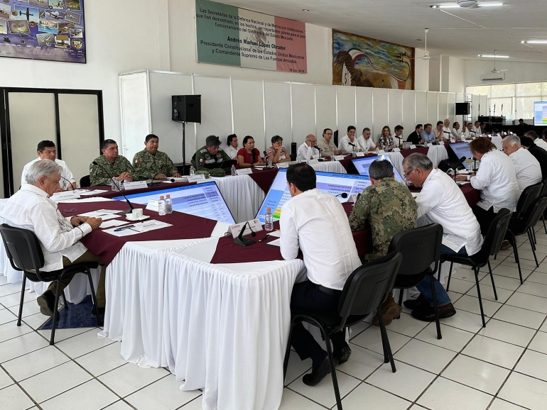
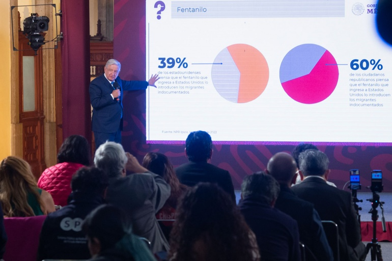
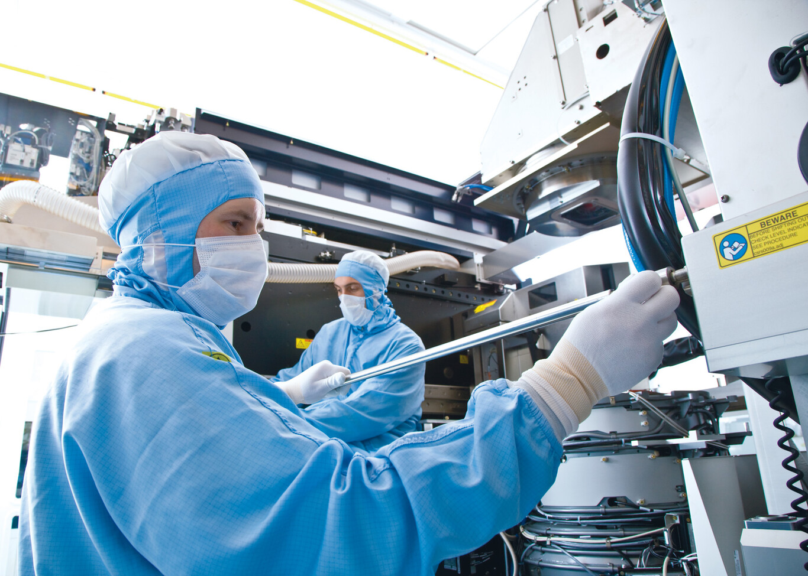

Al concluir la gira de supervisión del Tren Maya, el presidente Andrés Manuel López Obrador informó a través de sus redes sociales que están terminados 600 kilómetros de terracerías de esta obra prioritaria del Gobierno de México. Simultáneamente, se tienden rieles y el sistema eléctrico; se construyen estaciones y llevan a cabo obras complementarias, destacó el mandatario. En la publicación refrendó que “continúa inamovible la fecha de inauguración en diciembre de 2023”. El jefe del Ejecutivo encabezó este domingo una reunión con constructores públicos y privados a fin de constatar los avances en los tramos 2 (Escárcega-Calkiní) y 3 (Calkiní-Izamal); estuvo acompañado por el gobernador de Yucatán, Mauricio Vila Dosal.
La Confederación Sudamericana de Fútbol rindió un homenaje por todo lo alto a los campeones del mundo. La Selección Argentina de Fútbol a plantel completo viajó hasta Luque, Paraguay, para ser homenajeada por la obtención de su tercer título del mundo. Fue un espectáculo muy emotivo con la presencia de seguidores de la albiceleste que marcaron el sentir del aficionado argentino. Messi estuvo muy emocionado y recibió un bastón por parte del presidente de la CONMEBOL, Alejandro Domínguez, con el que le bautizó como el mejor del planeta.

Las relaciones entre el Gobierno español y los máximos especialistas del país en inteligencia artificial (IA) se están enturbiando. La semana pasada dimitieron tres miembros del Consejo Asesor de Inteligencia Artificial, un órgano consultivo constituido en 2020 para “garantizar un uso seguro y ético de la IA”, “compuesto por expertos españoles de reconocido prestigio internacional”, tal y como lo describe la web de La Moncloa.

El Gobierno de México prioriza la protección de la naturaleza, por lo que no permitirá la explotación desmedida de recursos como ocurrió en Playa del Carmen, Quintana Roo, con la filial de la empresa Vulcan Materials, SAC-TUN, afirmó el presidente Andrés Manuel López Obrador.

República de Singapur es un pequeño país insular del sudeste asiático. Actualmente tiene algo menos de seis millones de habitantes, una cifra que lo coloca muy lejos si nos ceñimos a su volumen poblacional de buena parte de sus vecinos asiáticos. Sin embargo, su economía se atreve a tutear a la de gigantes como Corea del Sur, Taiwán o Hong Kong. De hecho, convive con ellos en un club muy selecto conocido como "los cuatro tigres asiáticos" (algunos analistas prefieren llamarlo "los cuatro dragones asiáticos").